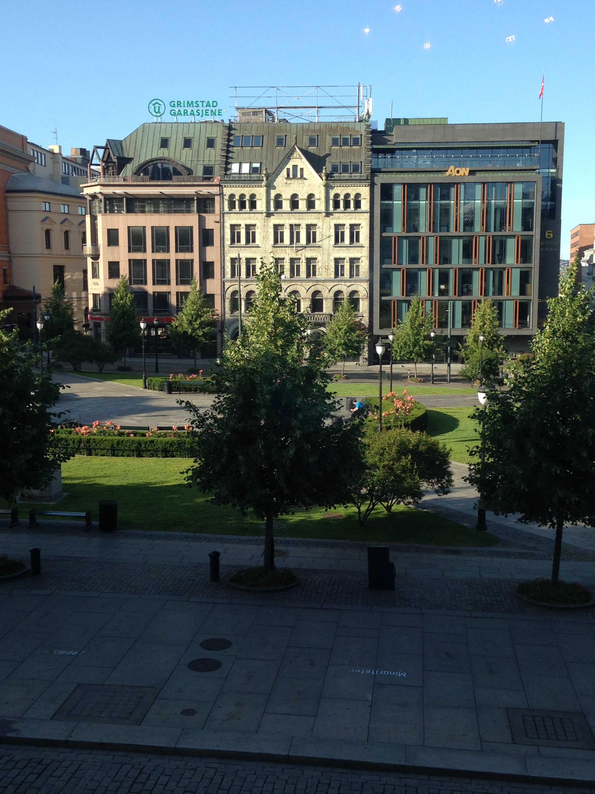
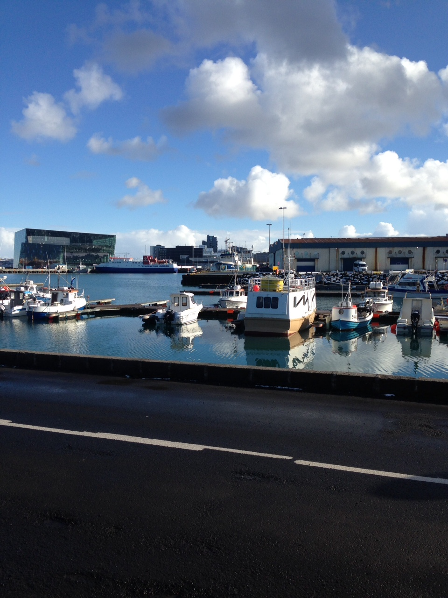

Oslo
 Olso - Noway's largest city
The capital of Norway is also its largest city. Oslo has over 600,000 inhabitants and covers
454 square kilometers, 242 of which are forests. Oslo has been the capital since 1814,
when Norway gained its independence from Denmark. The city is one of Europe's fastest-growing capitals.
There are so many things to do and see spend some time looking at Oslo's top attractions below.
Viking Ship Museum
Viking Ship Museum
The world's two best-preserved Viking ships from the 9th century are on display at the Viking Ship
Museum on the Bygdøy peninsula, which also shows Viking tools, sledges, a horse cart and wood carvings.
Use the link above to visit their website at www.khm.uio.no/english/visit-us/viking-ship-musuem/index.html
The National Museum
The National Gallery is home to Norway's largest public collection of paintings, drawings and sculptures.
Most of the art is pre-1950, and central attractions include
The Scream and Madonna by Edvard Munch.
Use the link above to visit the museum's website for hours and ticket prices.
The Polar Fram
The Fram Museum houses the world's most famous polar ship, Fram. Visitors can go on board
the ship and see how Norway's polar explorers lived and
survived in the coldest places on earth over 100 years ago.
Use the link above to find out more about exhibitions, hours and ticket prices.
The Kontiki Museum
Thor Heyerdahl (1914-2002) gained worldwide fame when he crossed the Pacific Ocean
on the balsawood raft Kon-Tiki in 1947. He followed this up with spectacular
expeditions on the reed boats Ra and Tigris. At the Kon-Tiki Museum, guests
can experience original vessels and up-to-date exhibits on Heyerdahl’s expeditions.
Use the link above to find out more about exhibitions, hours and ticket prices and guided tours.
The Natural Museum
The Natural History Museum consists of the Zoological Museum, the Botanical Garden and greenhouses.
The Zoological Museum shows animals from all over the world.The Botanical Garden's botanical variety
and diversity makes it an ideal place to relax from the stress of city life
Use the link above to find out more about exhibitions, hours and ticket prices and guided tours.
Experience the Best of Oslo
Oslo City Pass The Oslo Pass gives you free entry to more than 30 museums and attractions, free travel on all public transport, free parking in municipal car parks, free entry to outdoor swimming pools, free walking tours, discounts on sightseeing, ski simulator, Tusenfryd Amusement Park, concert tickets, climbing, ski and bike rental, and special offers in restaurants, shops, entertainment and leisure venues.
Tours and Excursions
A guided group tour of Oslo City Hall is a unique opportunity to experience the building's history, art and architecture, as well as some of the political and administrative activity that goes on in there. Tours are available in Norwegian, English, French, Spanish and German. Oslo City Hall offers free public tours in summer. The tours are usually held in English, but other languages are often provided.
The Royal Palace is open to the public during the summer. All visitors must follow a guided tour. Entrance by Slottsgården on the west side (the back) of the Royal Palace. Each tour lasts for approx. one hour. The Royal Palace is owned by the state and placed at the disposal of the head of state. It is where the King and Queen live. The Royal Palace is open to the public during the summer season. Guided tour takes visitors through some of the most beautiful state rooms in the Royal Palace: Cabinet Cloakroom, Cabinet Parlour, Council Chamber, White Parlour, King Haakon VII Suite, Upper Vestibule, Bird Room, Mirror Hall, Family Dining Room, Small Ceremonial Hall, Great Hall and the Banqueting Hall.